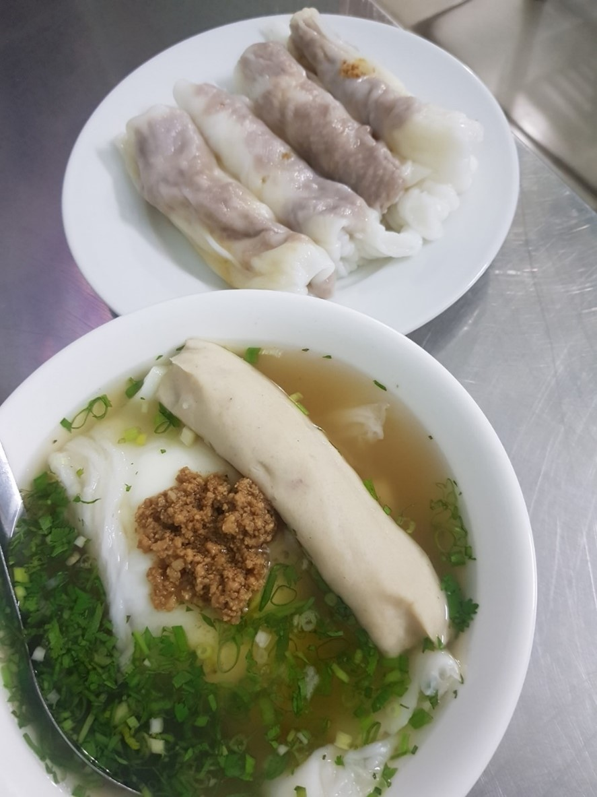
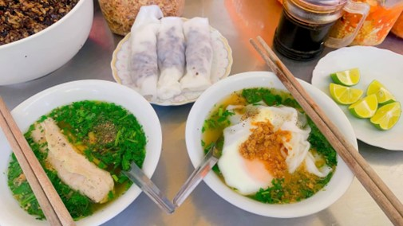
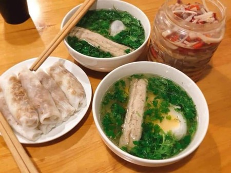

Bánh cuốn canh
Ẩm thực mỗi vùng miền đều có những nét đặc sắc riêng và Cao Bằng cũng không phải ngoại lệ. Người dân Cao Bằng coi bánh cuốn ăn cùng nước canh xương là đặc sản “hiếm có khó tìm”. Thay vì nước chấm pha mắm, bánh cuốn Cao Bằng ăn với nước xương ninh thơm thơm vị ớt cùng măng ngâm mắc mật nên còn gọi là “bánh cuốn canh”, để phân biệt với bánh cuốn ở miền xuôi. Cùng miếng bánh dẻo, dai và thơm nguyên mùi hạt gạo, bánh cuốn canh Cao Bằng khiến các du khách không thể bỏ qua, để rồi "ăn một lần nhớ mãi".
Không phải loại gạo nào cũng có thể làm bánh mà nhất định phải là gạo tẻ Đoàn Kết trên đất Cao Bằng mới tạo nên bột bánh hảo hạng, làm ra tấm bánh vừa trắng vừa mỏng, dai, mịn, với mùi thơm đặc trưng. Bột ngon là bột đáp ứng được độ sánh, dẻo, đây chính là bí quyết riêng của mỗi chủ quán. Nhân bánh có thể được xào sẵn cùng thịt hoặc trứng. Nồi nước dùng được ninh kỹ với xương lợn. Tấm bánh vừa trắng vừa mỏng, dai, mịn, với mùi thơm đặc trưng.
Điểm đặc biệt và mang lại hương vị riêng cho bánh cuốn Cao Bằng là nước dùng. Đó là nước canh xương ninh nhừ thơm lựng, không có váng mỡ mà ngọt lịm, thoảng hương tủy xương. Thêm chút hành hoa, rau mùi, nấm hương, mộc nhĩ và vài thìa thịt băm nhuyễn là đã có bát nước canh hấp dẫn ăn kèm bánh cuốn. Tùy theo khẩu vị, sở thích mà có người thích ăn bánh cuốn canh không hoặc thêm quả trứng, miếng giò...
Theo cách thưởng thức bánh cuốn của người Cao Bằng, bánh sẽ nhúng ngập trong bát canh được hòa thêm chút tương ớt, măng chua, dùng thìa và đũa vớt lên như khi ăn bún, phở. Sự hòa quyện giữa vị thanh mát của miếng bánh cuốn cùng nước xương hầm thơm, ngọt, béo ngậy của trứng, giò và vị thơm dịu của quả mắc mật khiến những thực khách muốn ăn thêm mãi. Măng ớt là gia vị không thể thiếu trong món bánh cuốn canh Cao Bằng.